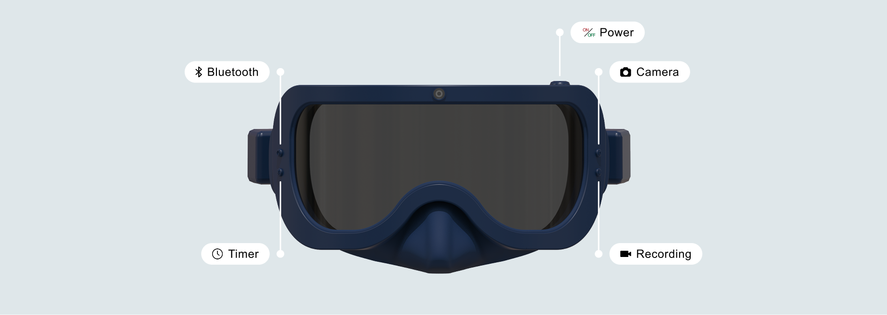

Diving+ reframes fragmented dive-site information, activity discovery, and community participation into a clearer mobile product. Positioned as a recruitment-ready case, the project moves from market observation and survey synthesis to interface structure, feature prioritisation, and a speculative hardware extension that demonstrates broader product thinking.
Diving+ is positioned here as a recruitment-ready product case that moves from user research and market reading to information architecture, feature definition, interface direction, and service extension. The project demonstrates an ability to structure a fragmented leisure ecosystem into a coherent product experience while keeping the visual language approachable for younger and lower-frequency divers.
The project was developed as a staged design process that began with category observation and progressively narrowed into clearer information design decisions. Rather than treating the interface as styling alone, the work focused on what users need to trust, compare, and act on before entering a relatively infrequent and information-sensitive activity.
Mapped the diving ecosystem through audience types, market actors, and participation contexts to define the real service surface.
Used survey signals and journey mapping to identify trust, readability, and information access as the primary design constraints.
Translated insights into product layers such as dive sites, activities, courses, community content, and personal records.
Expanded the system into a speculative goggles concept to show how the service logic could evolve beyond the mobile screen.
For a recruitment portfolio, this section foregrounds how the work thinks: not only what the screens look like, but how research was converted into priorities, structure, and a scalable product direction.


This project started from a practical product question: how can diving be made easier to approach, easier to understand, and more worth returning to? Diving+ answers that question by connecting community content, ecological knowledge, and dive utilities into one service system, turning underwater exploration into a clearer and more engaging decision journey.

The service is framed for a broad diving ecosystem that includes curious non-divers, beginners, certified divers, instructors, shops, and related media communities. From a recruitment perspective, the core challenge was designing a product structure that serves both discovery-oriented newcomers and information-heavy experienced users without overwhelming either group.
Diving Beginners
Diving Instructors
Equipment Developers
Diving Influencers
Digital Media
Coach
Dive Shops
The product is designed for a broad diving ecosystem that includes curious non-divers, beginners, certified divers, instructors, shops, and related media communities. From a recruitment perspective, the key design challenge was creating an interface that could serve both discovery-oriented newcomers and information-heavy experienced users without overwhelming either group.

Target Audience

Usage Environment

The goal was to turn scattered diving touchpoints into a structured product experience. Diving+ positions itself as a mobile platform that supports safer decision-making, stronger community interaction, and greater visibility for marine sustainability, while keeping the interface accessible enough for light-frequency users.
The survey clarified who the product should serve and why the interface needed to be highly legible. Scuba diving with oxygen tanks is the dominant activity at 70.2%, the largest age group is 15 to 25 at 72.6%, and 59.6% of respondents dive five times or less per year. These findings point to a product opportunity centered on entry accessibility, lightweight guidance, and fast access to trustworthy information.
Scuba diving with oxygen tanks is the main participation type, so product value should start from site information, safety context, and trip planning.
Users aged 15 to 25 form the dominant segment, which supports a more social, contemporary, and approachable interface tone.
Most respondents dive five times or less annually, making clarity, legibility, and low memory burden essential.
That split suggests the platform should balance practical pre-dive information with destination discovery and lifestyle-oriented browsing.
Most users fall into a younger demographic, which suggests the product should feel contemporary, social, and easy to enter without requiring expert knowledge from the start.
Because many users dive only occasionally, the experience should reduce memory burden through clear labels, structured content, and quick paths to essential dive information.
Scuba diving remains the central activity, so the product must foreground site details, conditions, certifications, safety, equipment, and trip planning.
This journey translates brand strategy into user behavior, showing how Diving+ attracts attention, supports evaluation, and guides users toward app download and course participation. It frames the product as a trust-building service, not just an information archive.
Awareness begins through Instagram, Facebook, YouTube, Spotify, and podcasts, framing diving as both a sport and a lifestyle culture.
Users compare information quality, store credibility, pricing clarity, and course accessibility before deciding whether the platform feels reliable enough to use.
The product guides users toward two outcomes: continuing to use the platform as an exploration tool and successfully joining courses, events, or dive-related activities.
Instagram, Facebook, YouTube, podcasts, and creator-style content broaden awareness and make the category feel less intimidating.
Users weigh course quality, instructor credibility, site detail, and interface clarity before they are willing to install and act.
Friends, family, and dive partners drive stronger adoption than pure ads, so the product must encourage sharing and visible credibility.
Initial awareness is built through Instagram, Facebook, YouTube, Spotify, and podcasts, positioning diving not only as a sport but also as a social and lifestyle-oriented experience.
Users begin comparing information quality, store credibility, and learning accessibility. This stage requires a visual language that feels trustworthy, readable, and easy to navigate.
The journey is designed to lead users toward two main outcomes: successfully downloading and using the platform, and successfully enrolling in diving-related courses and activities.
Elsa, a 32-year-old manager with extensive diving experience, represents a user driven by exploration, ocean preference, and meaningful outdoor engagement. Her profile helps define both interface tone and service priorities.
Referrals from friends, family, and diving partners play a stronger role than advertising alone, while Facebook marketing supports visibility. This indicates that community trust is central to the platform’s growth model.
The service connects two key values: course instruction and tourism aspects. Diving+ therefore works as both a learning platform and a gateway into wider underwater culture and travel-oriented experiences.
The visual system combines marine-inspired blue tones, simplified interface structures, and calm geometric forms to communicate clarity, trust, exploration, and environmental awareness across both digital and promotional applications.


Community content turns personal dives into shared knowledge, helping users learn through posts, follow relationships, and experience-based discovery.
Structured dive-site information gives users access to conditions, environment, and safety-related details before they commit to a location.
Sustainability is integrated into the product logic so that ecology-related content is surfaced as part of normal engagement rather than a separate campaign.
Courses and instructor access strengthen the service layer of the product, connecting exploration with learning and safer participation.
The goggles concept extends the platform into a speculative hardware experience, showing how the service could evolve into a richer diving ecosystem.


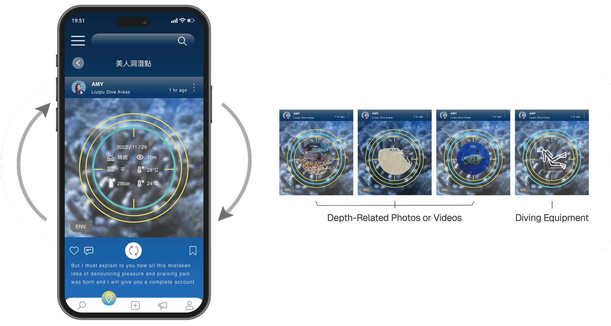
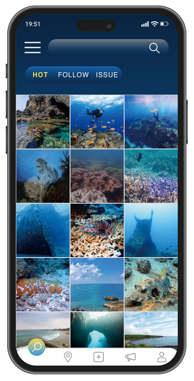
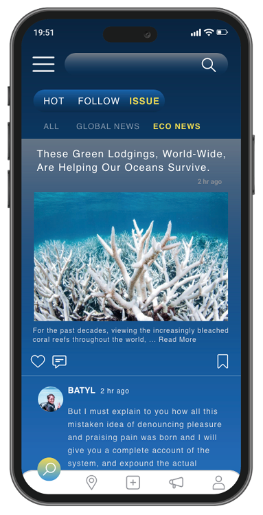
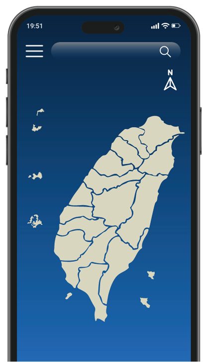
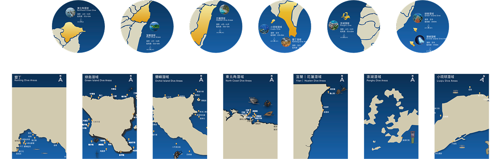
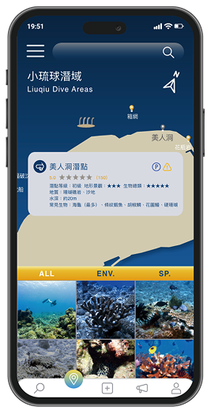
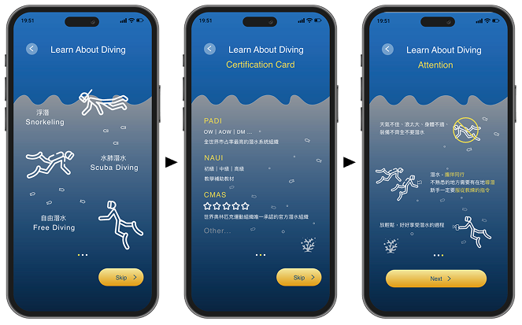
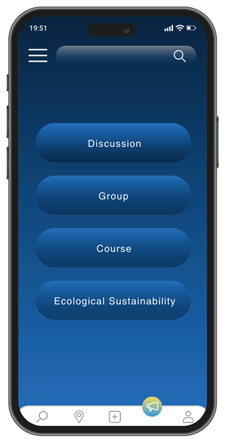
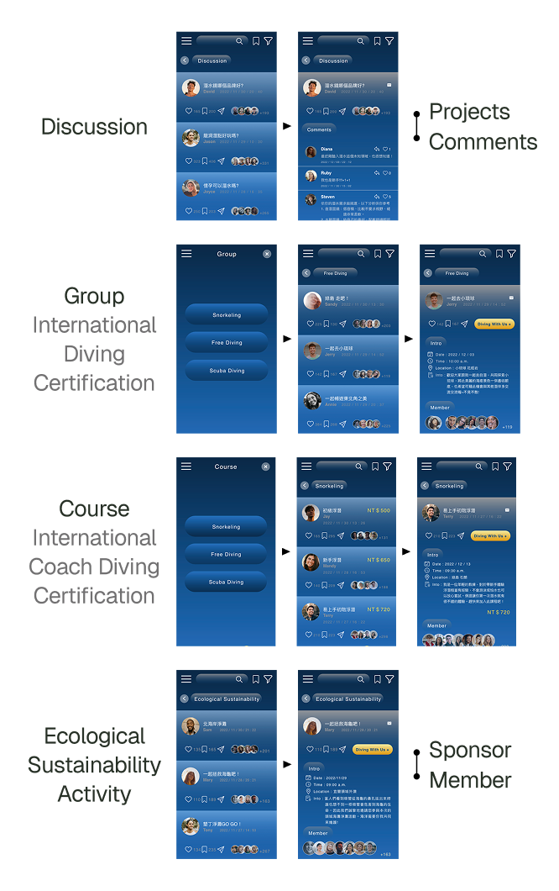
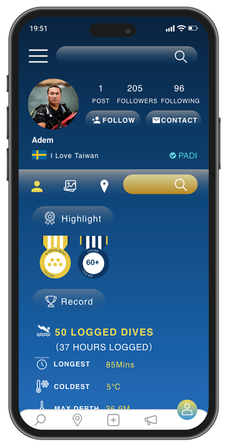
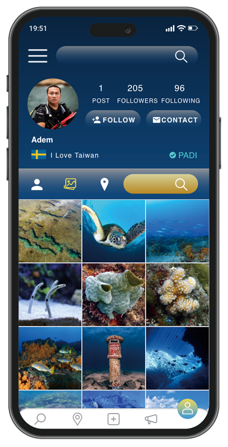
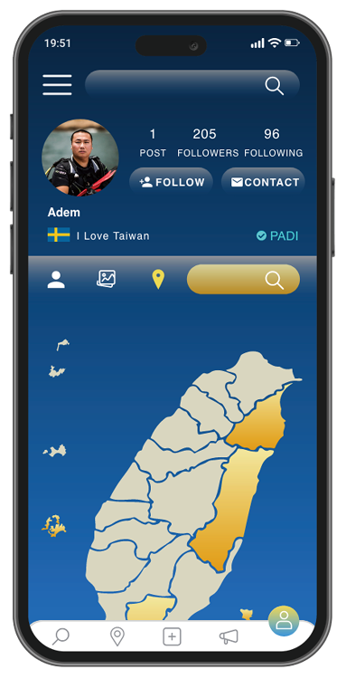
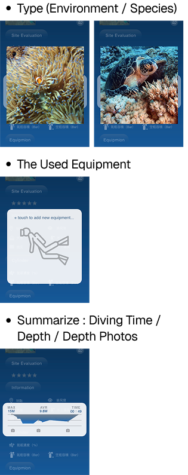
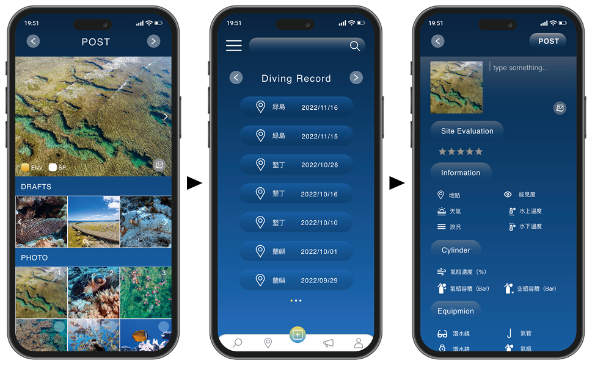
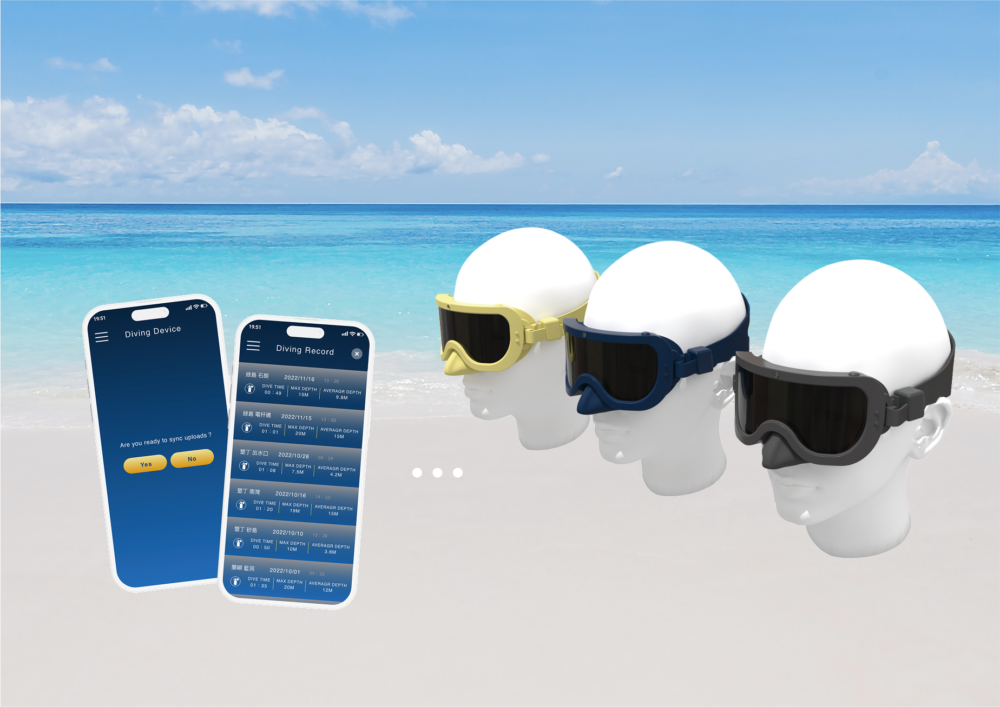
Diving+ Goggles extends the product vision into hardware by imagining a wearable interface for real-time dive information, lightweight recording, and underwater interaction. The concept demonstrates how the service could evolve from a mobile product into a connected ecosystem.
This stage explores the formal language of the goggles through iterative sketches, focusing on ergonomics, readability, and how a wearable object could visually align with the app ecosystem.
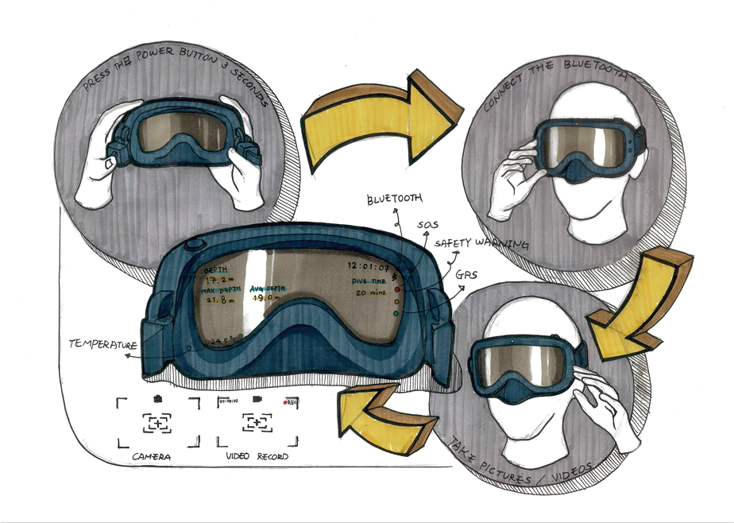
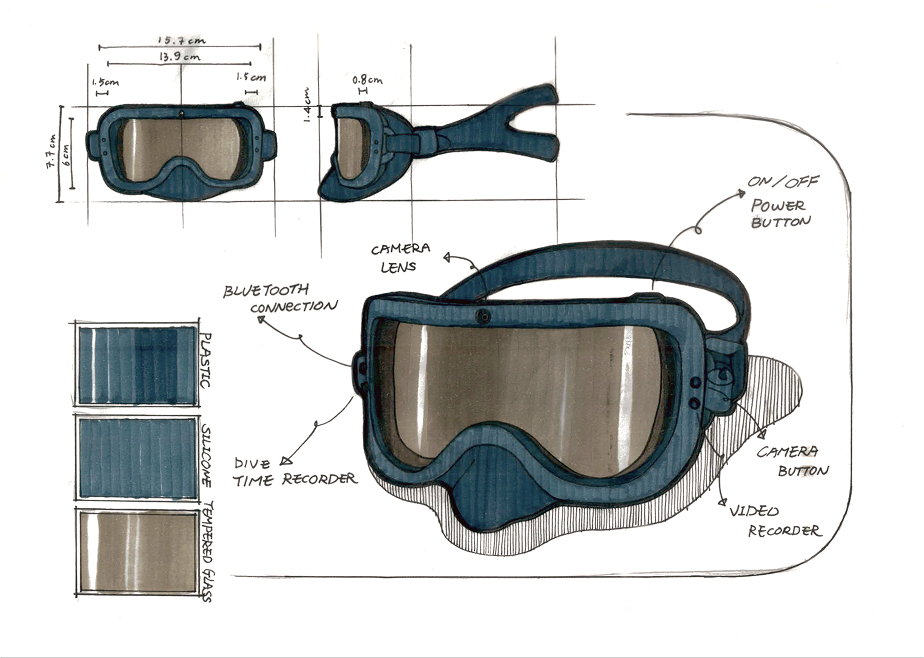
The exploded view communicates how the wearable concept is assembled, making the design intent legible from both a functional and industrial-design perspective.
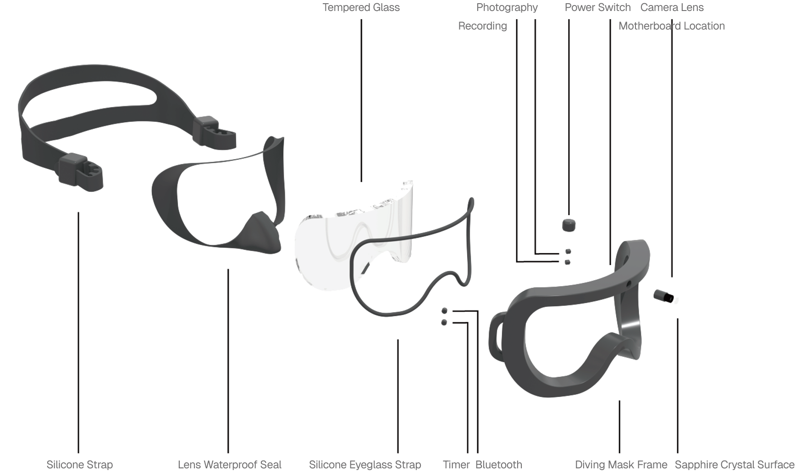
The control layout is simplified around high-frequency actions so that operation remains understandable even in a constrained underwater context.
Photo capture feedback is designed to be immediate and unmistakable, reducing uncertainty during underwater interaction.
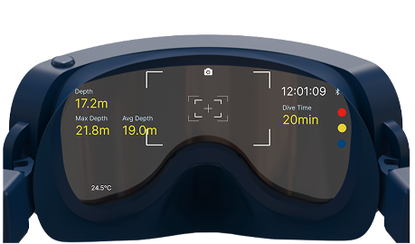
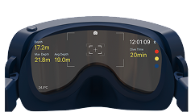
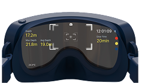
Recording status uses simple visual cues so the user can confirm capture state at a glance.
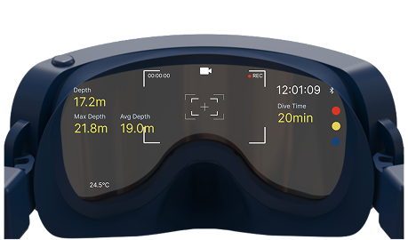
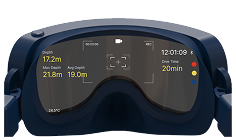
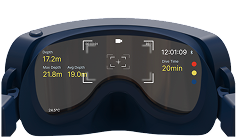
The lens interface prioritizes glanceable information, allowing users to read key dive data quickly without interrupting movement or attention underwater.
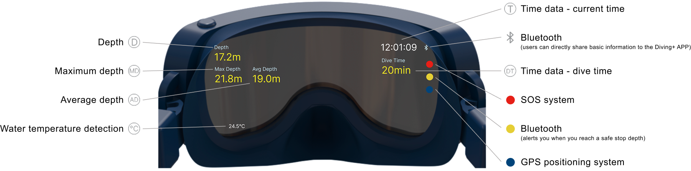
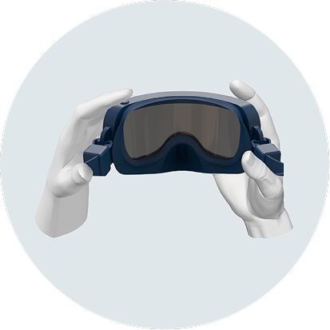
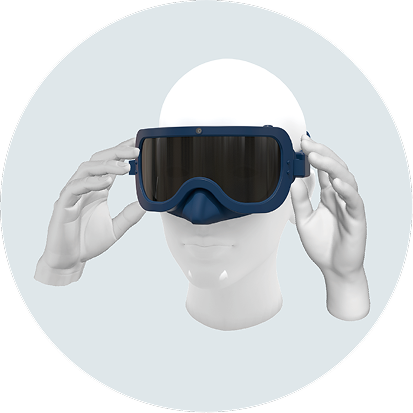
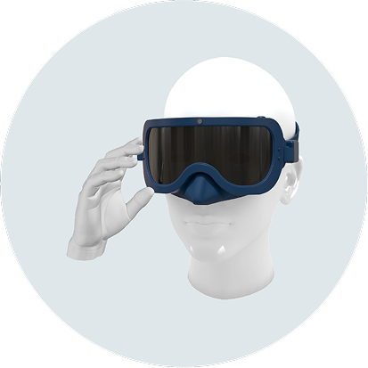
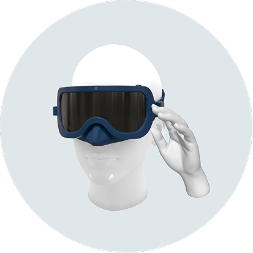
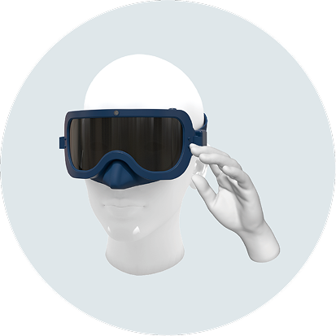
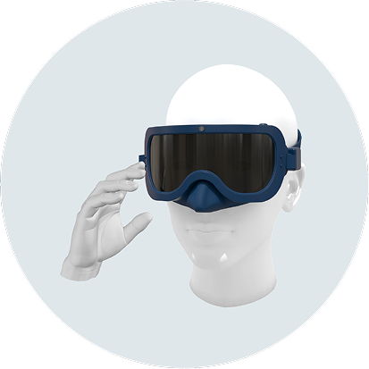